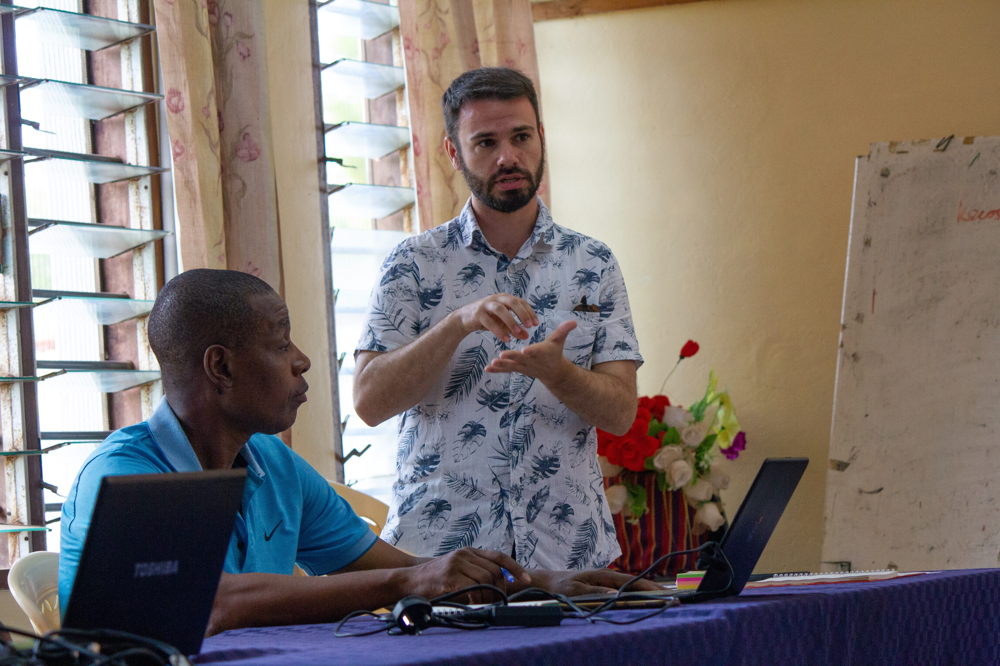

My Work
My interest in the intersection between marine ecosystems and aquatic food systems is a product of my desire to ask and answer ecological questions that have practical importance for coastal people and ecosystems. Most of my work focuses on understanding how environmental influences and management decisions drive (1) population and community ecology in marine systems and (2) the quantity and quality of food production from fisheries. My published work includes studies on commercial fisheries in the northeastern United States, artisanal coral reef fisheries in East Africa and the Western Indian Ocean, and the global governance of marine biodiversity and livelihoods.
Research Themes
The production of dietary nutrients for human consumption
As the only globally significant source of food production derived from wild ecosystems, marine fisheries are remarkably heterogeneous in terms of the quantity and quality of food they can provide. Most of my work on coral reef ecosystems has included an emphasis on quantifying fishery production in a way that is meaningful for nutrition and public health while also understanding how to better design nutrition-sensitive management strategies within the bounds of sustainability (e.g., Galligan & McClanahan, 2024).

The impacts of environmental change and management on fishery ecosystems
Unprecedented levels of anthropogenic pressures such as climate change, overfishing, and eutrophication have created significant uncertainty regarding the futures of coastal ecosystems and fisheries, sometimes transforming ecosystem dynamics in counterintuitive or unanticipated ways. At the same time, management decisions seeking to mitigate or adapt to these pressures can also lead to unintended consequences. By combining environmental and ecological datasets, I have studied the impacts of wastewater treatment on northern quahogs (Mercenaria mercenaria) in Narragansett Bay, the failure of steep reductions in fishing effort to secure the recovery of winter flounder (Pseudopleuronectes americanus) in southern Rhode Island, and the effectiveness of management strategies such as balanced harvest and gear modification on Kenyan coral reefs (e.g., Galligan et al., 2022).

Management and policy solutions for sustainability and justice in coastal communities
Governments must act to restore and protect marine biodiversity while also securing the rights of coastal people, but power relations and technical challenges present significant obstacles to improved governance. I have thus worked to combine my scientific expertise with ethical reflection on concrete policy options to inform global and local governance of coastal ecosystems and food systems (e.g. Galligan et al., 2024). Beyond scholarly articles, I have also engaged in policy advocacy in various fora, including the United Nations Framework Convention on Climate Change.

Jesuit Identity
The Society of Jesus (Jesuits) is the largest men’s religious order in the Catholic Church, and we are known for our unique blend of spirituality and learning. As a Jesuit in formation to be a priest, I am committed to the service of faith and the promotion of justice, and to working for the reconciliation of God, human beings, and all of creation. This brings with it a commitment to accompany those on the margins of society, and to collaborate with all members of the human family in a spirit of welcome and dialogue. To find out more about the Jesuits, including our training process and the types of work we do, click here.
Two Catholic theological frameworks have profoundly shaped how and why I carry out my research:
Integral ecology was proposed by Pope Francis in 2015 as a way to see and respond to the intersecting global crises of environmental degradation and social injustice. It pays special attention to “the cry of the earth and the cry of the poor,” is oriented towards systemic change, and is grounded in spiritual, ethical, and theological values (Francis, 2015, p. 49).
The theologian Elizabeth A. Johnson, C.S.J., proposes the community of creation as a guiding norm and worldview for Christians, a biblical paradigm “based on the understanding that humans and other living beings, for all their differences, form one community woven together by the common thread of having been created by God” (Johnson, 2014, p. 261).